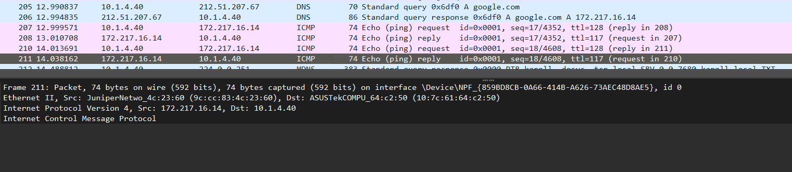
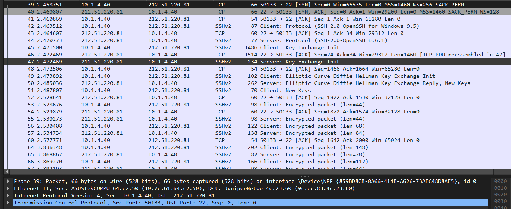
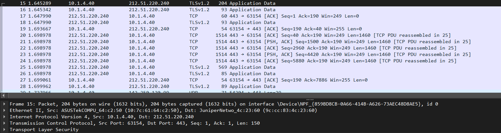

OSI Model Report
Part 1 : Theoretical
1.1 ISO/OSI Model
The OSI model has 7 layers that show how data moves through a network.
- Application – Programs like web browsers.
- Presentation – Changes data format and handles encryption.
- Session – Keeps connections open.
- Transport – Moves data (TCP, UDP).
- Network – Handles IP addresses and routing (IP, ICMP).
- Data Link – Deals with frames and MAC addresses (Ethernet, ARP).
- Physical – Wires and signals (USB, RS-232).
1.2 PDUs
| Layer | PDU |
|---|
| Application | Data |
| Transport | Segment |
| Network | Packet |
| Data Link | Frame |
| Physical | Bits |
1.3 Protocols and Layers
| Protocol | Layer |
|---|
| ARP | Data Link |
| Bluetooth | Physical |
| DHCP | Application |
| DNS | Application |
| FTP | Application |
| HTTP | Application |
| ICMP | Network |
| IEEE 1394 | Physical |
| IEEE 802.11 | Data Link |
| IGMP | Network |
| IPv4, IPv6 | Network |
| L2TP | Data Link |
| MIME | Presentation |
| NetBIOS | Session |
| NNTP | Application |
| RS-232, RS-449 | Physical |
| RTP | Application |
| SIP | Application |
| SLIP | Data Link |
| SSL, TLS | Presentation |
| TCP | Transport |
| Telnet | Application |
| UDP | Transport |
| USB | Physical |
Part 2 : Practical
Karol Jóźwiak

Protocols : Ethernet(Data Link), IP(Network), ICMP(Transport), DNS(Application)

Protocols : Ethernet(Data Link), IP(Network), TCP(Transport), SSHv2(Session+Application)

Protocols : Ethernet(Data Link), IP(Network), TCP(Transport), TLSv1.2(Presentation)

Protocols : Ethernet(Data Link), IP(Network), TCP(Transport)
Mikołaj Niezbrzycki
Image 5 + description
Image 6 + description
Image 7 + description
Image 8 + description